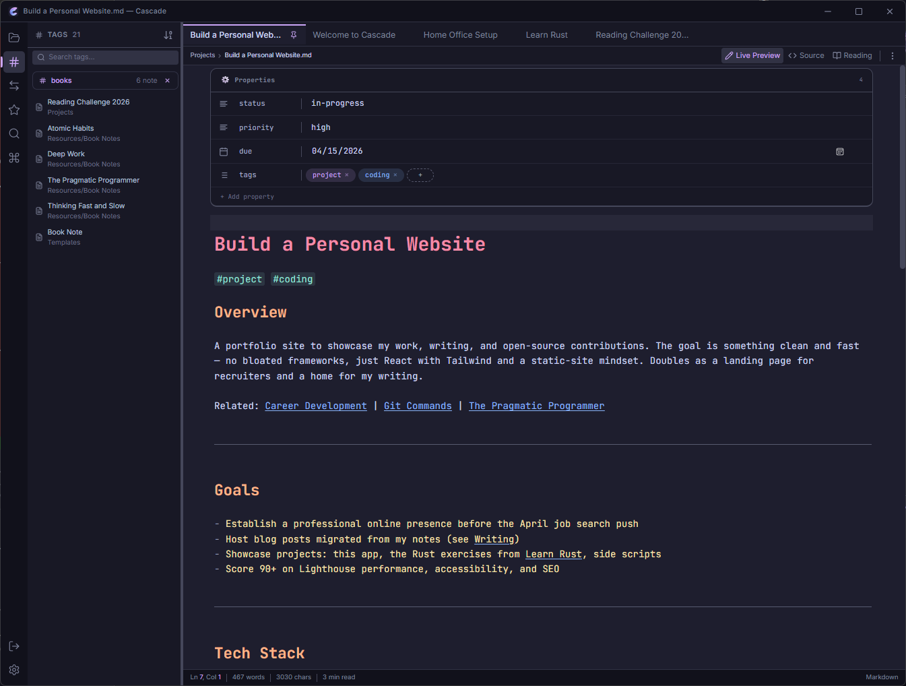

A native markdown note-taking app built for speed, privacy, and personal knowledge management. No cloud. No Electron. Just your notes.

Powerful enough for daily use. Simple enough to stay out of your way.
Write in markdown, see it rendered instantly. Switch between Live Preview, Source, and Reading modes. Powered by CodeMirror 6.
Connect notes with [[wiki-links]] and autocomplete. The backlinks panel shows every note that references the current one.
Vault-wide search with regex, case-sensitive, and whole-word filters. Quick Open and Command Palette for instant access.
Four Catppuccin color themes — Mocha, Macchiato, Frappe, and Latte. Customize accent colors, fonts, and spacing.
Built with Tauri and Rust. No Electron, no browser overhead. Starts instantly, uses minimal memory, respects your resources.
Your files stay on your disk. No cloud accounts, no telemetry, no tracking. Vault-based storage you fully control.
Extend Cascade with sandboxed plugins. Register commands, add sidebar panels, customize the status bar. Safe iframe execution.
Migrate from Obsidian, Notion, Logseq, or Roam Research. Export to Markdown, HTML, or PDF. Your data is never locked in.
2,200+ translation keys across 13 namespaces. English built-in, ready for community translations into any language.
Modern, fast, and maintainable from the ground up.
# Clone the repository git clone https://github.com/Real-Fruit-Snacks/Cascade.git cd cascade # Install dependencies npm install # Run in development mode npm run tauri dev
Every action at your fingertips. No mouse required.
Cascade is free, open source, and yours to keep.